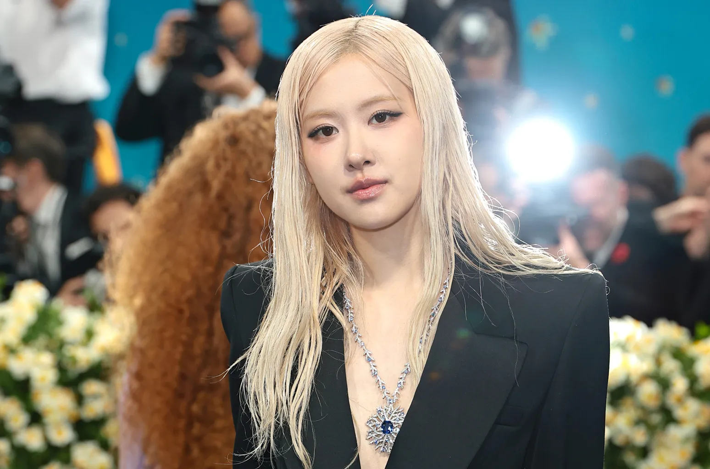

Park Chaeyoung (박채영), más conocida por su nombre artístico Rosé, es una cantante, bailarina y compositora de Corea del Sur que actualmente tiene contrato con The Black Label y Atlantic Records. Es mejor conocida como la cantante principal y bailarina principal del exitoso grupo de chicas Blackpink.
Rosé nació el 11 de febrero de 1997 en Auckland, Nueva Zelanda y se mudó a Melbourne, Australia a la edad de siete años. Su infancia en Australia la ayudó a dominar el inglés y el coreano.
